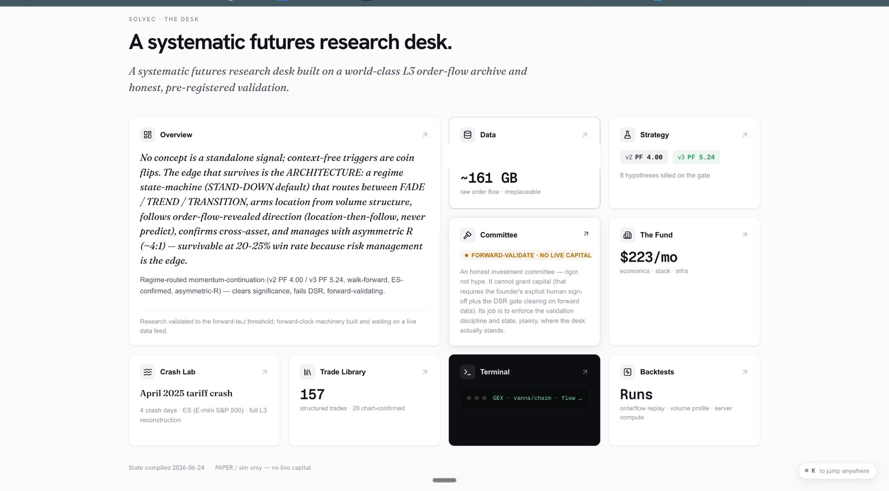
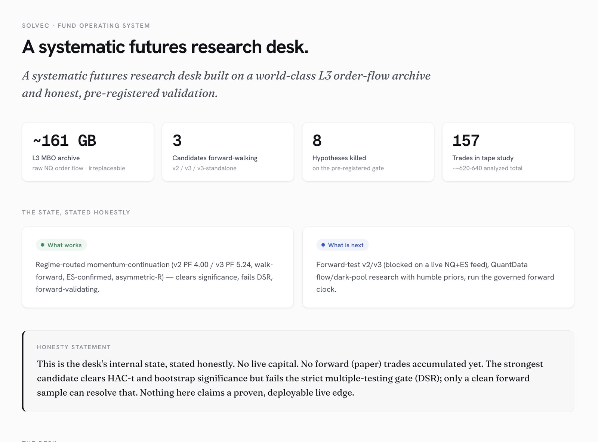
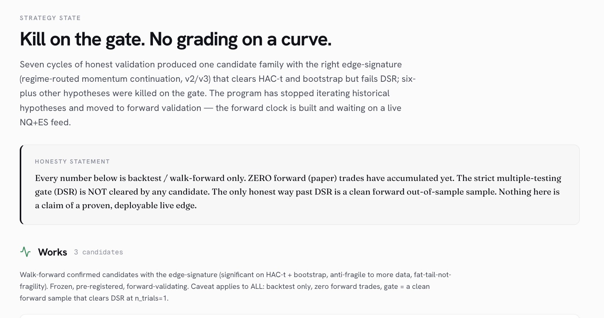
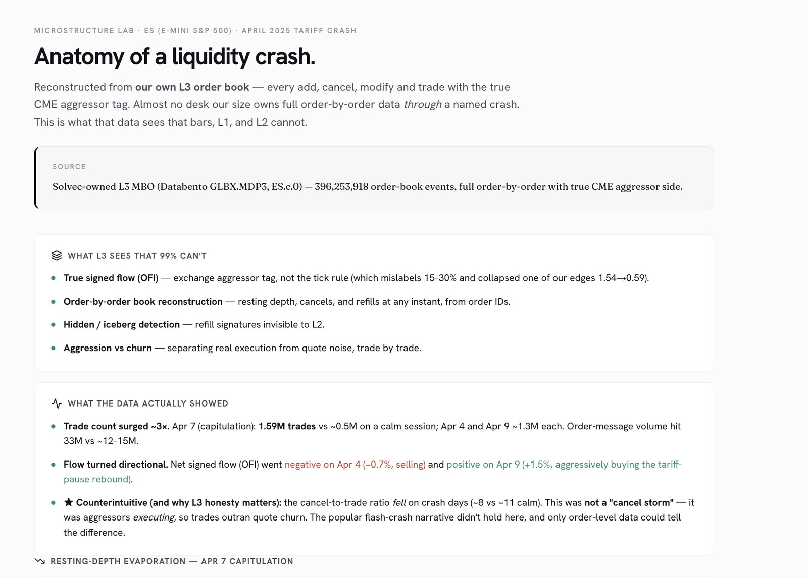
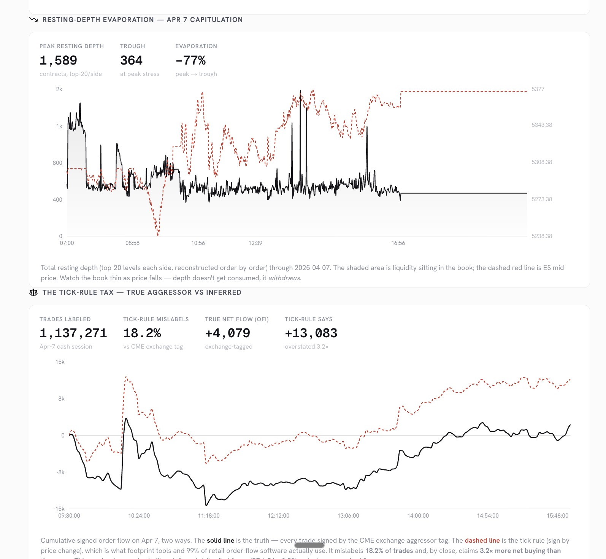
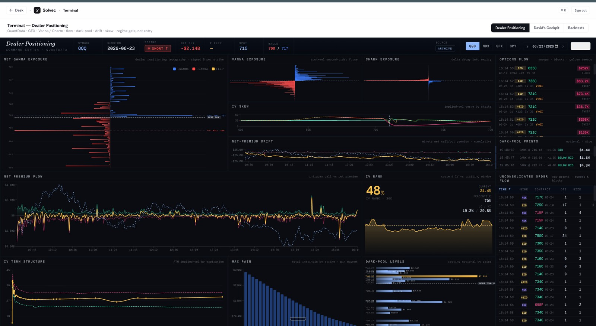
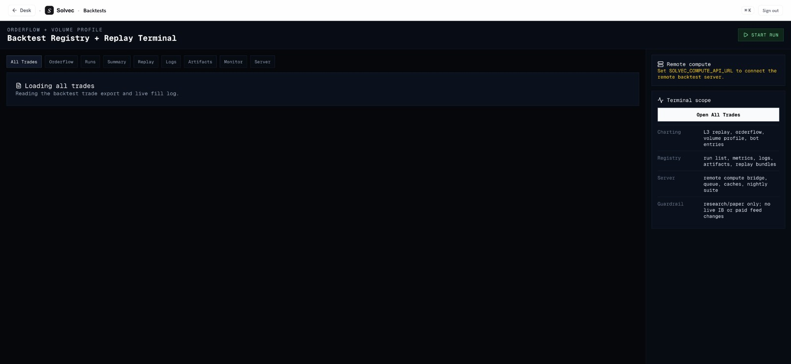

Mission control for the bot
The platform is where we run and oversee the bot. It brings the bot's whole world into one view: the trades it is taking, the data it draws on, the strategies it trades, how each strategy was validated, and what has been ruled out. Everything reports to one honest state.

The bot has to earn its trades
Before the bot is allowed to trade a strategy, that strategy has to survive honest, pre-registered testing. Roughly 161 GB of raw Level-3 order flow feeds a process that has forward-walked three strategy candidates, killed eight hypotheses on a pre-registered gate, and studied 157 real trades. If a strategy has not cleared a clean, forward, out-of-sample test, the bot does not trade it.

Kill on the gate
Every strategy the bot might run is tested against pre-registered statistical gates first. Candidates that clear significance and bootstrap testing but fail the strict multiple-testing gate are held back, not promoted. What survives is an architecture the bot trades, a regime-aware, cross-asset, risk-first framework, rather than a single fragile trigger. The exact mechanics stay in-house.

The data the bot sees
The bot's edge comes from data almost no independent desk owns: full order-by-order (Level-3) market data. To show what that data makes visible, this Crash Lab reconstructs the April 2025 tariff crash event by event, exposing what bar charts and standard depth data cannot see: true signed order flow, resting-depth evaporation, hidden iceberg refills, and real aggression versus quote noise. This is the resolution the bot reasons at.


The dealer-positioning terminal
The terminal is a real-time cockpit for institutional options positioning that both the bot and the team read: net gamma exposure, vanna and charm, implied-volatility skew, dark-pool prints, and live options flow, all in one view. It sets regime and context, never a standalone trade trigger.

Backtest and replay
Before anything reaches the bot, we test it here. The backtest registry and replay terminal plug a strategy in and run it against the historical Level-3 data we own, replaying order flow and volume profile trade by trade. Strict guardrails keep everything research-and-paper only, so no live capital sits behind the bot yet.
